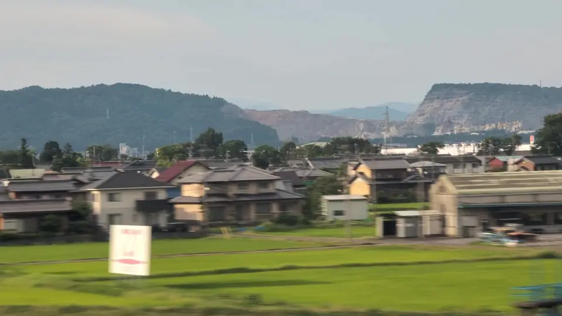

- Section
- Gifu-Hashima → Maibara, near Ogaki
- Seat side
- Seat E · mountain side
- Timing
- About 106 minutes after leaving Tokyo on a Nozomi train
- Photos
- 2 photos
What is that pale, carved-away mountain?
First-time riders often react to Mt. Kinsho with a simple question: 'That mountain — its summit is scooped out in steps. What is it?' You are not alone in that reaction; photos of this hill regularly circulate online with reactions like 'what is that mountain' or 'quarried too much.' More people probably arrive at the name by searching for 'strange white mountain visible from the Shinkansen' than by knowing the name Mt. Kinsho in advance. The answer: a limestone hill about 217 meters high in Akasaka, Ogaki City — one of Japan's foremost sources of high-purity limestone and marble, quarried continuously from the Meiji era to today.
More: Wikipedia: Mt. Kinsho (Japanese only)Ogaki City: Mt. Kinsho fossil museum and limestone quarrying (Japanese only)Kinshozan Fossil Museum (Japanese only)
If you are traveling from Tokyo toward Shin-Osaka, start watching the Seat E · mountain side window as you approach Gifu-Hashima → Maibara, near Ogaki. If you are traveling toward Tokyo, the order is reversed.
Where did the 'Gifu Pyramid' go?
Mt. Kinsho once had a beautifully symmetrical, pyramid-like peak, affectionately known locally as the 'Gifu Pyramid.' Older photographs show a clean square-pyramid outline that stood out clearly even from the Shinkansen. But its limestone and marble are essential raw materials for cement, ironmaking flux and chemicals, and the mountain has been quarried from the top down ever since the Meiji era. As a result, the original peak has largely been removed. What remains are stepped quarry benches and broad white rock faces exposed along the sides.
Geologically, there is a much older story too. The limestone layers of Mt. Kinsho were laid down in a shallow sea about 260 million years ago in the Permian period, and are rich in fossils of crinoids, fusulinids and large sea snails. In Akasaka, Ogaki, the Kinshozan Fossil Museum displays these fossils, reminding visitors that a mountain being quarried away is also a treasure house of ancient life.
So Mt. Kinsho is not just a 'quarried mountain.' It is an active limestone mine that continues to underpin Japanese industry, and simultaneously a witness to a Permian-era sea. Behind the white rock face beyond the window is an ongoing story: the landscape here will keep changing over time.
Location at a glance
Open mapSwitch between the spot and the Shinkansen viewpoint.
How to catch Mt. Kinsho
1. Choose the window first
As you approach Gifu-Hashima → Maibara, near Ogaki, start watching from Seat E · mountain side. Use Live Guide while riding, or the map on this page before you board.
The view lasts roughly 10 to 20 seconds, though buildings and terrain may interrupt it. Start watching a little early.
2. Highlights
Around Ogaki, look far off on the Seat E side for a 'low mountain with its top scooped away in bright, stepped layers.' Its clearly man-shaped profile makes it easy to recognize once you know what to look for. Watching it as a mountain still in the process of being reshaped changes how the view lands.
Mt. Kinsho in photos

 Related
Solar Ark
Related
Solar Ark
 Related
Kiyosu Castle
Related
Kiyosu Castle
 Related
FUJITEC Big Wing
Related
FUJITEC Big Wing